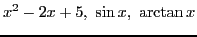
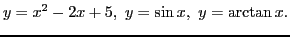
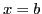
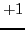

Consider the functions

of the independent variable  . Denoting the dependent variable
in each case by
. Denoting the dependent variable
in each case by  , we may write
, we may write

In each case (the value of the function) is known, or,
as we say, defined, for all values of . This is not by any
means true of all functions, as the following examples
illustrating the more common exceptions will show.
Here the value of (i.e. the function) is defined for all values
of except . When the divisor becomes zero and
the value of cannot be computed from (2.1).
Any value might be assigned to the function for this value of the argument.
In this case the function is defined only for positive values of .
Negative values of give imaginary values for , and these must
be excluded here, where we are confining ourselves to real numbers only.
Here is defined only for positive values of .
For negative values of this function does not exist (see
3.7).
Since sines, and cosines cannot become greater than  nor
less than  , it follows that the above functions are
defined for all values of ranging from to
inclusive, but for no other values.
, it follows that the above functions are
defined for all values of ranging from to
inclusive, but for no other values.
david joyner
2008-08-11